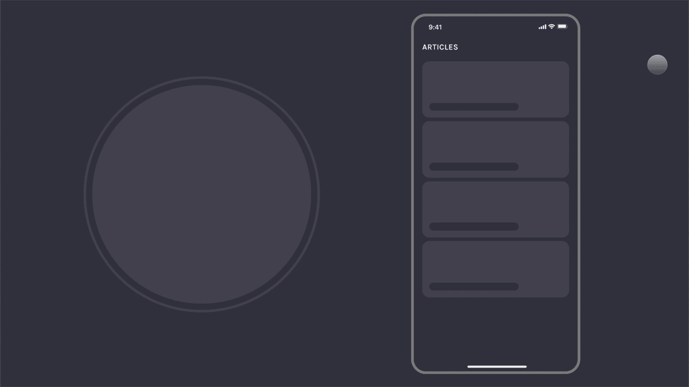
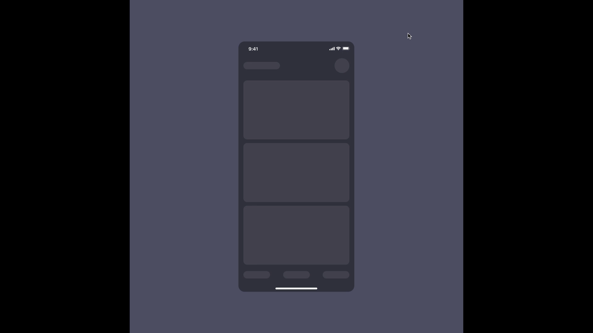

Enhancing Clarity and Flow Through Micro-Interactions

Project Overview
Animation was added is the process in order to enhance a product's interactivity. We used animation to guide users around the interface, alert users of a change, influence users' decisions, and indicate a relationship between elements—among other uses. UI animation also reduced the mechanical feel of an application & website, creating a much more natural and intuitive experience.
Project type: Animation
Industry
Mobile Micro Interaction
Tools
Adobe After Effects, Invision, Protopie, Figma
Roles and Responsibilities
From ideation to implementation, I led the design and motion strategy for interactive transitions, microinteractions, and storytelling animations—ensuring they elevated both usability and visual delight without compromising performance.
Micro-interaction DesignMotion for UsabilityPrototype AnimationAccessibility & RestraintTesting & Iteration
Problem Statement
In many digital portfolios and modern web experiences, static transitions and abrupt content changes can lead to disjointed user journeys—especially when navigating between sections, viewing media, or interacting with featured content. Users often struggle to maintain context when shifting between views or lose engagement due to lack of visual feedback. The challenge was to design and implement smooth, meaningful UX animations that not only enhance aesthetic appeal but also improve clarity, flow, and interactivity across the user interface—while remaining lightweight and performance-friendly across devices.
Animations Display
Overview of the Final Animation
The final UX animations in this project were designed to enrich interaction without distracting from usability. Each motion element was crafted to enhance clarity, maintain user flow, and add a touch of delight—especially in navigation-heavy or content-rich environments like portfolios or product showcases.
Animations included:
Smooth list-to-detail transitions that preserved spatial continuity and supported easy back-navigation
Section expand/collapse interactions that enabled deep dives into content without disorienting the user
Story-style modules that launched full-screen, played through, and auto-collapsed—removing friction from short, immersive content
Image zoom-to-full-screen views with actionable options like download, accompanied by animated affordances
Hero content reveals rendered progressively, building anticipation and directing attention in a controlled, elegant manner
Each animation was tested for performance on low-end devices and optimized for minimal distraction. Lightweight formats like Lottie and native motion specs ensured smooth handoff to developers.
Animation 1 - Hover Effect & Click Feedback
This animation enhances interactivity and visual feedback on desktop screens by adding a smooth hover effect to key UI elements such as buttons, cards, and navigation links.
Purpose:
To provide immediate, intuitive feedback when users move their cursor over interactive elements—reinforcing clickability and improving overall discoverability.
Behavior:
Subtle scaling or elevation of cards (e.g., +4px shadow, 1.02x scale)
Color or opacity shift on buttons and links
Smooth transitions using ease-in-out for natural motion
Delay-free response to maintain a snappy feel
Design Consideration:
Kept motion minimal and consistent across elements to avoid distraction
Optimized for accessibility (contrast retained during hover)
Lightweight implementation using CSS or Lottie for performance
This hover animation creates a more responsive and polished user experience, particularly for web users familiar with dynamic interfaces.
Animation 2: List to Project Details Transition
This animation showcases a fluid transition from a list of projects to a detailed view of a selected item, enhancing spatial continuity and reducing context-switching friction.
Purpose:
To help users understand the relationship between the list item and its expanded content by using motion to guide focus and maintain visual context.
Behavior:
When a list item is tapped, it expands and morphs into the full project details screen
Background elements fade out or shift subtly to de-emphasize them
The animation creates a sense of "zooming in" on the selected item
Design Consideration:
Eases the cognitive load by maintaining layout consistency during navigation
Adds clarity and intent to the user's action
Makes transitions feel smoother and more natural, especially on mobile devices
This interaction not only improves user experience by making navigation intuitive but also elevates the product's perceived quality through refined micro-interactions.

Animation 3: Expandable Sections with Smooth Transitions
This animation showcases an interactive transition between a list of projects and individual project detail views within a web or mobile interface.
Purpose:
To create a seamless and intuitive navigation flow where users can explore content deeply without losing context or feeling disoriented.
Behavior:
Users begin with a clean list of section cards
On click, the selected card expands into a full section detail view with a fluid motion
A clear back action is provided, allowing the user to collapse back into the list view without reloading or jarring jumps
Design Consideration:
Maintains context and orientation using motion as a visual bridge
Reduces cognitive load by keeping interactions light and predictable
Encourages exploration while preserving minimal, focused UI
This transition design enhances user experience by balancing depth and simplicity, especially useful for showcasing portfolios, case studies, or content libraries.
Animation 4: Seamless View-to-Story Transition with Auto-Close
This animation showcases a smooth transition from a main view into a story-like detail view, followed by an automatic return to the original screen once the story completes.
Purpose:
To create an immersive, lightweight storytelling experience that doesn't require manual back navigation.
Behavior:
The user taps on a card or item
It transitions fluidly into a full-screen story view
After the animation or content ends, the screen automatically collapses back to the original view
Design Consideration:
Offers a focused, time-bound interaction
Removes friction by eliminating the need for back buttons
Ideal for showcasing short content previews, case studies, or highlights
This interaction is well-suited for mobile or portfolio experiences where you want to maintain user flow while presenting rich content in a lightweight, elegant manner.
Animation 5: Full-Screen Image Viewer with Download Action
This animation demonstrates a full-screen image viewer that enhances media engagement by offering a dedicated download option within the viewer.
Purpose:
To provide users with a distraction-free image viewing experience and a clear, accessible way to download assets directly.
Behavior:
The user taps on an image thumbnail
The image expands smoothly into a full-screen view
A download button appears with a subtle animation
On tapping the button, the image downloads with a brief visual confirmation
Design Consideration:
Encourages interaction with visual content in a clean, focused environment
Reduces user effort by surfacing the download action contextually
Adds polish through microinteractions and animated feedback
Useful for showcasing portfolio images, downloadable templates, or product previews
This interaction works well in creative portfolios, documentation hubs, or gallery-style experiences where imagery and accessibility are both key.
Animation 6
The hero animation introduces website elements with smooth, staggered transitions that guide the user's attention in a visually engaging manner. As the page loads, key components like the headline, subtext, CTA buttons, and visual illustrations appear sequentially with fade-ins, slide-ins, or scale effects. This animation not only creates a polished first impression but also helps establish a visual hierarchy, ensuring users focus on the most important content first. It adds a sense of depth and energy to the hero section, making the landing experience feel dynamic, intentional, and thoughtfully crafted.
Conclusion
Working on the HWC OPD management app was an insightful journey, allowing me to design a system that significantly improves healthcare service delivery in rural areas. By focusing on user-centered design, I created modules that simplify complex workflows for health workers and ensure better patient care through streamlined processes. Integrating queue management with the OPD workflow, inventory management, and outreach activities provided a comprehensive solution that caters to the diverse needs of health workers and administrative officials alike.
This project deepened my understanding of healthcare challenges in underserved areas and the role of efficient digital solutions in addressing them. The key takeaway was striking a balance between usability and functionality—designing for users with varying technical expertise while ensuring all critical operations are handled efficiently. The experience reinforced the importance of aligning technology with the needs of healthcare systems and inspired me to continue exploring ways to create impactful designs in the health sector.
Interested in
collaboration?
Let's discuss what we can create together.
More Projects
Community Health Integrated Platform (CHIP) 2.0
The Community Health Integrated Platform (CHIP) is an Android app for ASHA workers and ANMs, designed to streamline health record management and reduce paper dependency. I contributed to enhancing the Khushi Baby health app by integrating features like RMNCH+A coverage and ABHA integration. User research guided the interface design, ensuring it met healthcare workers' needs. Continuous testing confirmed that the app effectively improves maternal and child health outcomes in underserved areas.
Anarock Channel Partner Application
Anarock is a B2B Platform for channel partners(Property Brokers) to view listing of properties and sell them to clients. App allows CPs to manage all their clients with the help of CRM which is inbuild in the app and also after selling the property CPs can manage all the finance proceeding in the app itself with the help of CM(Commission Management).